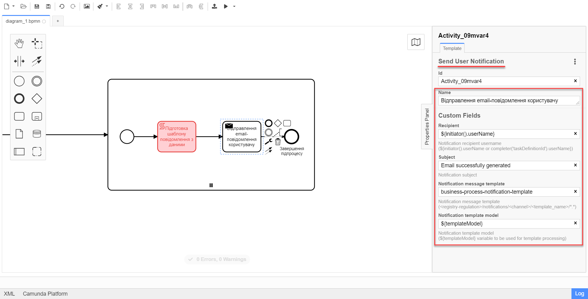
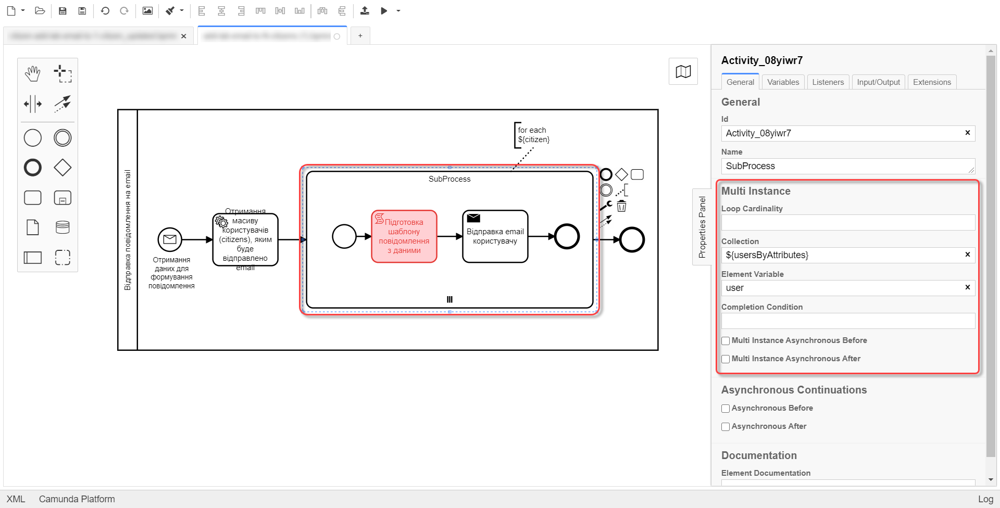

Notifying users via email
1. Prerequisites
The Platform supports sending email messages via the SMTP protocol using one of the following mail server options, depending on the registry requirements:
-
Platform mail server
-
External mail server
You must configure the communication channels before registry users can receive notifications.
|
For details on configuring the mail server, see: |
The system can only send messages to registered users.
2. Configuring the message template
To enable sending email notifications to portal users, you must create a message template to use when modeling a business process.
The message template must be created in HTML using the Apache FreeMarker template language. The recommended practice is using the .ftlh file extension for HTML templates and .ftl for regular text documents.
|
To learn more about Apache FreeMarker, refer to https://freemarker.apache.org/ |
To support sending notifications to users, the regulations structure contains an additional directory called <registry-regulations>/notifications. A typical email message template has the following structure:
Where:
-
<template-directory> is the directory containing the template resources. The directory name must be unique for the corresponding communication channel.
-
<template-directory>/css/style.css is a unified CSS file that contains the styles used in the HTML document. For example: <link rel="stylesheet" href="css/style.css">
-
<template-directory>/image/*.* contains image files used in the HTML document. For example: <img src="images/image.jpg">
-
<template-directory>/notification.ftlh is the HTML template used to generate the message body.
An HTML template used to generate the message body
<!DOCTYPE html> <html lang="uk"> <head> <meta charset="UTF-8"> <meta name="viewport" content="width=device-width, initial-scale=1, maximum-scale=1, user-scalable=0"/> <link rel="stylesheet" href="style.css"> </head> <body> <div class="header"> <div class="logo-wrap"> <img src="image/trident.jpg" alt="Diia" class="logo"> </div> <div class="platform-name">Registry<br>Platform</div> </div> <div class="main"> ${processName} process completed successfully </div> <div class="footer"> <br> Contacts or service information </div> </body> </html> -
<template-directory>/notification.yml is the configuration file with email metadata.
Example 1. A configuration file with email metadatatitle: "Process completed successfully"
3. Modeling business processes
There are two main scenarios for sending notifications when modeling business processes:
3.1. Notifying a single user
When modeling a business process, you can use a standard send task extension called Send User Notification.
The Send User Notification extension is a delegate for sending email notifications to citizens using a specified HTML template.
|
Before configuring templates in Camunda Modeler, make sure the resources > element-templates application folder contains the sendUserNotification.json file. |
To set up the template, perform these steps:
-
Open the business process modeling interface.
-
Create a Send Task.

-
In the settings panel on the right, click the
Open Catalogbutton and select the Send User Notification delegate template. ClickApplyto confirm your action.
-
Set up the following options:
-
Name: Specify the task name. For example,
Sending an email notification. -
Recipient: Specify the notification recipient’s unique identifier (
<username>). For example,${initiator().userName}. -
Subject: Specify the text subject of the notifications. For example,
Notification is generated successfully. -
Notification message template: Specify the unique name of a template to use for the body of the message. The template name must match this template’s directory name in the regulations (for example,
business-process-notification-template). -
Notification template model: Specify the variable to use for template processing —
${templateModel}.
-
3.2. Notifying multiple users
To notify multiple users, you need to model a business process similarly to notifying a single user, but this time using the Multi-Instance function. This function allows sending messages to all users in an array simultaneously.

-
In the Collection field, specify the array of users obtained via Keycloak service attributes. In our example, the array is stored in the
${usersByAttributes}variable, so we enter it here.In our example, we use the ${usersByAttributes}variable, which already contains an array of usernames from the business process. Alternatively, you can provide usernames as comma-separated values. For example:username1,username2,username3. -
In the Element Variable field, specify the local instance variable under the given name.
The message-sending process does not block the main flow of the business process and runs asynchronously.
|
For details on the |
3.3. Related delegates for getting usernames
You can obtain a list of citizens to send notifications to using the following standard extension for service tasks:
-
The
getCitizenUsersByAttributesFromKeycloakdelegate is used to find citizen portal users in Keycloak by their attributes.
|
For details on setting up the delegate, see Finding citizens in Keycloak by their attributes. |
4. Notifications logging
Successful or failed attempts to send a notification are logged in the audit log and saved to the audit database.
Logging a successful notification event in the audit DB
{
"result": "SUCCESS",
"notification": {
"channel": "email",
"subject": "A notification from the Bureau of Credit Histories",
"message": "<!DOCTYPE html>\n<html lang=\"uk\"> \n <head> \n <meta charset=\"UTF-8\" /> \n <meta name=\"viewport\" content=\"width=device-width, initial-scale=1, maximum-scale=1, user-scalable=0\" /> \n <style>body {\n margin: 0;\n padding: 0;\n line-height: 1;\n font-family: 'e-Ukraine', Verdana, sans-serif;\n}\n\n.header {\n padding: 0 48px;\n margin: 32px 0;\n color: #000;\n font-size: 16px;\n}\n\n.logo-wrap {\n float: left;\n margin-right: 16px;\n}\n\n.logo {\n width: 48px;\n height: 48px;\n}\n\n.platform-name {\n font-size: 16px;\n line-height: 24px;\n}\n\n.main {\n padding: 0 48px;\n margin: 48px 0;\n color: #000;\n font-size: 16px;\n line-height: 24px;\n}\n\n.main-title {\n margin-bottom: 24px;\n font-size: 24px;\n line-height: 28px;\n}\n\n.footer {\n padding: 16px 48px 80px;\n background: #000;\n color: #fff;\n font-size: 12px;\n line-height: 16px;\n}\n</style>\n </head> \n <body> \n <div class=\"main\">\n Information about a new credit agreement was added to the credit history: effective date - Wed Jul 26 12:54:51 UTC 1978, creditor - auto-user-notification-f278366. In case of fraud or creditor's mistake, you can file a dispute in the credit history. \n </div> \n <div class=\"footer\"> \n <br /> Contacts or service information \n </div> \n </body>\n</html>",
"recipient": {
"id": "auto-user-notification-f",
"email": "auto-user-notification-f@inbucket.inbucket.svc.cluster.local"
}
},
"delivery": {
"channel": "email",
"status": "SUCCESS",
"failureReason": null
},
"action": "SEND_USER_NOTIFICATION",
"step": "AFTER"
}Where:
-
The
resultparameter indicates the result of sending the message. -
The
channelparameter specifies which communication channel was used. -
The
subjectparameter indicates the subject of the message. -
The
messageparameter is the message body with business data created from the template. -
The
recipientattribute provides information about the recipient, namely their ID and email. -
The
deliveryattribute reflects the delivery status for the corresponding communication channel.
Logging a failed notification event in the audit DB
{
"result": "FAILURE",
"notification": {
"context": {
"system": "Low-code Platform",
"application": "ddm-bpm",
"businessProcess": "bpmn-send-inbox-with-form",
"businessProcessDefinitionId": "bpmn-send-inbox-with-form:2:1f54abab-65b2-11ed-8fda-0a580a822841",
"businessProcessInstanceId": "b84ceb8f-65b8-11ed-8fda-0a580a822841",
"businessActivity": "Activity_0l2g5sf",
"businessActivityInstanceId": "Activity_0l2g5sf:b84e9948-65b8-11ed-8fda-0a580a822841"
},
"notification": {
"title": null,
"templateName": "inbox-template-ubki111",
"ignoreChannelPreferences": false
},
"recipients": [
{
"id": "auto-user-citizen",
"channels": [
{
"channel": "diia",
"email": null,
"rnokpp": "1010101014"
},
{
"channel": "email",
"email": "auto1-user-citizen@inbucket.inbucket.svc.cluster.local",
"rnokpp": null
}
],
"parameters": {
"dateCredOpen": "inbox-template-ubki",
"creditor": "inbox-template-ubki"
}
}
]
},
"delivery": {
"channel": "email",
"status": "FAILURE",
"failureReason": "Notification template inbox-template-ubki111 not found"
},
"action": "SEND_USER_NOTIFICATION",
"step": "AFTER"
}Where:
-
The
resultparameter indicates the result of sending the message. -
The
contextparameter provides details about the business process for which the message is modeled and its components. -
The
templateNameparameter indicates which template was used to send the message. -
The
recipientsarray shows information about message recipients and communication channels. -
The
deliveryattribute reflects the delivery status for the corresponding communication channel and the failure reason.